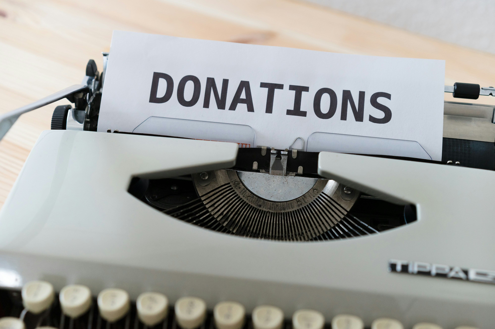
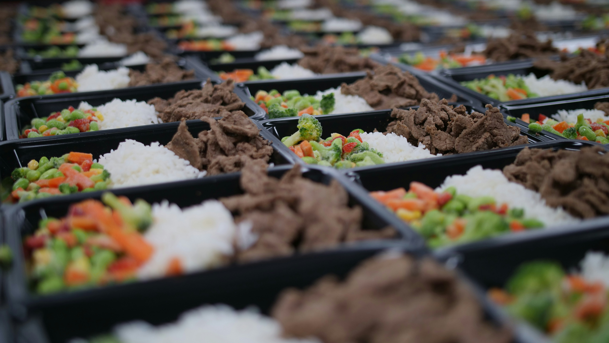

Sua ajuda faz a diferença

Juntos podemos transformar vidas
Cada contribuição ajuda a fortalecer nossas ações e levar apoio a quem mais precisa. Com a sua doação, conseguimos ampliar projetos, oferecer recursos essenciais e construir um futuro mais justo, solidário e sustentável para todos.

Doe alimento, espalhe esperança
A solidariedade também começa com um prato de comida. Através da doação de alimentos, ajudamos famílias em situação de vulnerabilidade e promovemos mais dignidade, cuidado e acolhimento para quem enfrenta momentos difíceis.